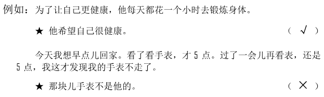
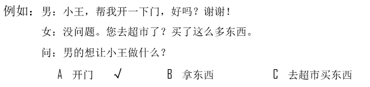
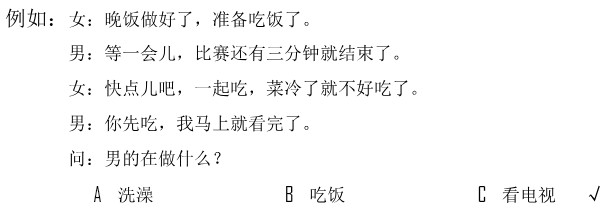
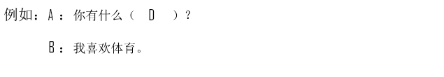
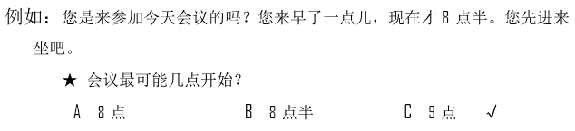

🎧 Phần nghe · Câu 1–40
Bấm phát để bắt đầu nghe. Thời gian làm bài bắt đầu khi bạn nghe hoặc chọn đáp án.
Nghe · Phần 1 · Câu 1–5
Nghe và chọn hình A–F phù hợp.

Nghe · Phần 1 · Câu 6–10
Nghe và chọn hình A–E phù hợp.
Nghe · Phần 2 · Câu 11–20
Nghe và chọn ✓ (đúng) hoặc × (sai).

Câu 11
★他打算去图书馆学习。
Câu 12
★他要准备考试。
Câu 13
★那条裤子太长了。
Câu 14
★他希望小雪声音大点儿。
Câu 15
★他请小王去他家玩儿。
Câu 16
★他觉得电影很一般。
Câu 17
★他不想离开那儿。
Câu 18
★那双鞋很便宜。
Câu 19
★小李没接到客人。
Câu 20
★他要出国旅游了。
Nghe · Phần 3 · Câu 21–30
Nghe và chọn đáp án A, B hoặc C.

Câu 21
Câu 22
Câu 23
Câu 24
Câu 25
Câu 26
Câu 27
Câu 28
Câu 29
Câu 30
Nghe · Phần 4 · Câu 31–40
Nghe hội thoại và chọn đáp án A, B hoặc C.

Câu 31
Câu 32
Câu 33
Câu 34
Câu 35
Câu 36
Câu 37
Câu 38
Câu 39
Câu 40
Đọc · Phần 1 · Câu 41–45
Chọn câu A–F phù hợp để ghép với từng câu.
Đọc · Phần 1 · Câu 46–50
Chọn câu A–E phù hợp để ghép với từng câu.
Đọc · Phần 2 · Câu 51–55
Chọn từ A–F điền vào chỗ trống.
Đọc · Phần 2 · Câu 56–60
Chọn từ A–F điền vào chỗ trống của hội thoại.

Đọc · Phần 3 · Câu 61–70
Đọc đoạn văn và chọn đáp án đúng.

Câu 61
房子很好，附近环境也不错，但还是要等我妻子看过以后才能做决定。
★说话人是什么意思？
★说话人是什么意思？
Câu 62
我想找几个关于中国节日文化的小故事，明天要给班上的学生讲，你那儿有吗？
★他最可能是做什么的？
★他最可能是做什么的？
Câu 63
欢迎大家来这儿旅游。别看我们这个城市不大，但已经有几千年的历史了。上午我先带大家去一条有名的街道走走，那儿不但有很多好吃的，而且街道两边的房子也很特别，来这儿的人是一定要去看看的。
★关于那个城市，可以知道：
★关于那个城市，可以知道：
Câu 64
以前我每天早上都会跑半个小时的步，我知道这是个好习惯，对身体很好，但后来因为工作太忙，就没时间跑了。
★他现在：
★他现在：
Câu 65
很多人会根据自己的兴趣爱好来选择工作，他们觉得选择自己喜欢的工作，更容易做出成绩。
★根据爱好来选择工作，会：
★根据爱好来选择工作，会：
Câu 66
哥，你们先去咖啡馆儿吧，我突然想起来，我房间的空调还没关，我先回去一下，然后去咖啡馆儿找你们。
★他接下来要做什么？
★他接下来要做什么？
Câu 67
经过这件事，我明白了：机会只给有准备的人，知道自己想要的，然后为它去努力。只有这样，机会到来时，你才不会错过它。
★怎样才不会错过机会？
★怎样才不会错过机会？
Câu 68
这只小狗是我同学的，他让我帮忙照顾几天。前两天小狗生病了，还好发现得早，现在已经没事了，它比来的时候还胖了些呢。
★关于那只狗，可以知道：
★关于那只狗，可以知道：
Câu 69
每天接儿子回来的路上，他都要给我讲学校里的事。在他的眼里，世界每天都是新鲜的。
★儿子眼中的世界是什么样的？
★儿子眼中的世界是什么样的？
Câu 70
过去手机只能用来打电话，现在不但能听歌、玩儿游戏，上网也很方便。所以在汽车站或者地铁站里，经常能看见人们一边玩儿手机一边等车。
★根据这段话，现在的手机：
★根据这段话，现在的手机：
Viết · Phần 1 · Câu 71–75
Sắp xếp các từ đã cho thành câu hoàn chỉnh.
Phần viết được đối chiếu với đáp án mẫu; bỏ qua khoảng trắng và dấu câu. Điểm hiển thị là điểm luyện tập.

Câu 71
Câu 72
Câu 73
Câu 74
Câu 75
Viết · Phần 2 · Câu 76–80
Nhập chữ Hán phù hợp với pinyin vào từng ô trống.